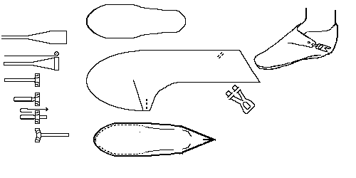
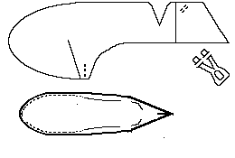
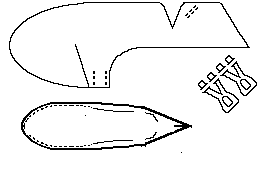
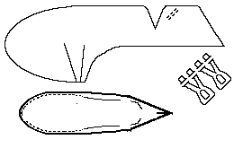
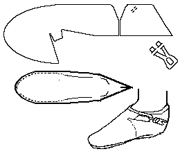
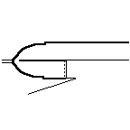
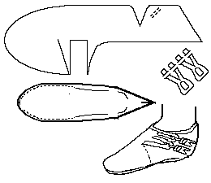
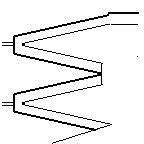

Anglo-Scandinavian Scoh or Shoe
"Type 4"
(10th-11th Centuries)
The typology is based on that used by Carlisle,
although any errors in the interpretation here are likely to be mine. This
design is based on a description found in Carlisle
and Hald describing a variety of shoes
excavated from the Jorvik dig at Coppergate, York. In the typology
used by Groenmann-van Waateringe
at Haithabu, this would be of a "Type 8" shoe. The major differences
between these typologies has to do with the height of the shoe. The
Jorvik shoe is a shoe, and as such, barely reaches to the ankle, while
the Haithabu shoe seems to have at least three straps and is more of a
short boot. The Haithabu shoe is dated to the 9th-11th centuries.
The stitching is most generally done with a 1 mm, or so, "thread"
of leather lacing. The stitch-holes average 2-3 mm in diameter and are
spaced approximately, 8 mm apart. There is a line of stitching along the
upper portion of the shoe that indicates a number of possibilities, from
the use of a binding stitch to strengthen the leather to prevent stretching,
attach a lining (now lost), or, and this is most likely, setting a top
band of leather in place.
The turned sole usually appear to have been attached by a grain/flesh
stitch on the upper, and a flesh/flesh tunnel-stitch on the sole, changing
to edge/flesh stitch at the heel riser. Plain edge/flesh stitches are also
seen on soles.
Note that at the point of the flap, a piece of leather is attached
(either through runing it through the leather of the upper, by sewing it
into place, or by stitching it to the topband). This kidney bean shaped
toggle is made by rolling up a length of leather, and then slipping the
tail of the leather back through the rolled "head".
The receiving latchet is slipped through the holes that are too
small for them in the side of the shoe. They are then either affixed somehow,
or are left alone.
Please note that while the sketch seems to show this as an ankle boot,
it generally doesn't quite reach to ankle level.
Type 4a1

Basic single flap and toggle shoe. It is made with a top band
that stretches all the way around the flap.
Type 4a2

Shoe with a single, wide flap and two toggles.
Type 4a3

Shoe with two flaps and two toggles.
Type 4a4


Shoe with a single top band latchet and toggle. This is a tentative
design, based only on a single example. The top band reaches out and then
folds back onto itself. The top bands for this design are not shown on
the drawing of the pieces above.
Type 4a5


Shoe with a double top band latchet and toggle This design has
two slender latchets, each of which is protected by a topband that wraps
around it. It should be noted that the attachment of the toggle-loops is
unclear as there is only a singe pair of holes. It may be that each loop
passes through the body of the shoe through a single hole and is somehow
attached to the shoe inside. The top bands for this design are not shown
on the drawing of the pieces above.
Return to [Index] or [Next]
Footwear of the Middle Ages - Historical Shoe Designs/Number
4, by I. Marc Carlson. Copyright 1996, 1998
This page is given for the free exchange of information, provided the
Author's Name is included in all future revisions, and no money change
hands, other than as expressed in the Copyright Page.